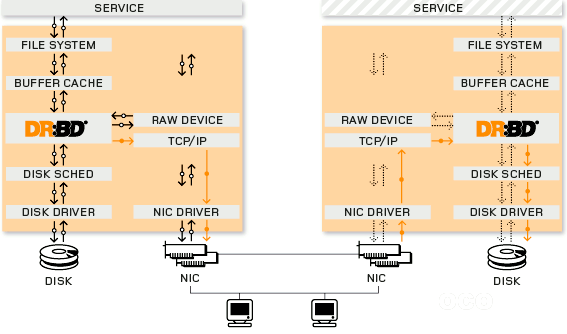

# CentOS sudo yum -y install openssh-server # Ubuntu sudo apt-get install openssh-server
/etc/ssh/sshd_config
# Port 22
#AddressFamily any
AddressFamily inet
#ListenAddress 0.0.0.0
#ListenAddress ::
AuthorizedKeysFile .ssh/authorized_keys
PasswordAuthentication yes
X11Forwarding yes
# 查看当前端口 egrep '^Port ' '/etc/ssh/sshd_config' # 修改端口 changeConfig /etc/ssh/sshd_config Port ' ' 2048 # 防火墙 firewall-cmd --permanent --zone=public --add-port=2048/tcp firewall-cmd --reload firewall-cmd --permanent --query-port=2048/tcp # 重启服务 systemctl restart sshd # 查看端口号 netstat -tnlp | grep '/sshd\s*$' # 测试登录 ssh root@localhost -p 2048
# -m 密钥格式 { RFC4716 | PKCS8 | PEM } # -b 密钥长度（单位为bit） # -t 加密算法 { dsa | ecdsa | ecdsa-sk | ed25519 | ed25519-sk | rsa } # -P 密码短语 # -C 备注信息 # -f 保存的文件名 ssh-keygen -m PEM -t rsa -b 4096 -P '' -f ~/.ssh/id_rsa # ssh-keygen -t rsa -P '' -f ~/.ssh/id_rsa pushd ~/.ssh; ll # -rw------- 1 root root 1679 * id_rsa # -rw-r--r-- 1 root root 408 * id_rsa.pub # id_rsa : 私钥（个人本地持有） # id_rsa.pub : 公钥（远程主机持有） cp ./id_rsa.pub ./authorized_keys # ssh -l root -i <私钥> <地址>
Couldn't load this key (OpenSSH SSH-2 private key(old PEM format))
id_rsa、Save private key# 查看是否开启 egrep '^PasswordAuthentication ' '/etc/ssh/sshd_config' # 关闭密码登录 changeConfig /etc/ssh/sshd_config PasswordAuthentication ' ' no # 重启应用 systemctl restart sshd # 检查是否可以密码登录 ssh root@localhost -p 2048
yum install -y yum-utils vi '/etc/yum.repos.d/nginx.repo'
[nginx-stable] name=nginx stable repo baseurl=http://nginx.org/packages/centos/$releasever/$basearch/ gpgcheck=1 enabled=1 gpgkey=https://nginx.org/keys/nginx_signing.key module_hotfixes=true [nginx-mainline] name=nginx mainline repo baseurl=http://nginx.org/packages/mainline/centos/$releasever/$basearch/ gpgcheck=1 enabled=0 gpgkey=https://nginx.org/keys/nginx_signing.key module_hotfixes=true
# 安装 yum install -y nginx # 测试安装成功 nginx -v # 查看自动添加的用户 tail -2 /etc/passwd # nginx:x:?:?:nginx user:/var/cache/nginx:/sbin/nologin # 防火墙 firewall-cmd --permanent --zone=public --add-service=http firewall-cmd --permanent --zone=public --add-service=https firewall-cmd --reload # 控制 nginx # 启动 nginx -s stop # 快速关闭 nginx -s quit # 正常关闭 nginx -s reload # 重新加载配置文件 nginx -s reopen # 重新打开日志文件
ll '/usr/share/nginx/html' # 默认页面所在目录 ll '/etc/nginx' # 配置所在目录
user nginx; # 用户 worker_processes 1; # 允许生成的进程数 # 全局错误日志 # 日志路径，日志级别（debug|info|notice|warn|error|crit|alert|emerg） error_log /var/log/nginx/error.log warn; # 记录主进程ID的文件 pid /var/run/nginx.pid; # 引入其它配置 include /etc/nginx/conf.d/?.conf # 【连接处理】 events { accept_mutex on; # 网路连接序列化，可防止惊群现象 multi_accept on; # 一个进程是否可以同时接受多个网络连接 use epoll; # 事件驱动模型（select|poll|kqueue|epoll|resig|/dev/poll|eventport） worker_connections 1024; # 每个进程最大连接数 # 并发总数 max_clients = worker_professes * worker_connections } # 【针对HTTP并影响所有虚拟服务器】 http { include mime.types; # 文件扩展名与文件类型映射表 default_type text/plain; # 默认文件类型 # access_log off; # 取消访问日志 # 自定义的格式名称，自定义的日志格式 log_format main '$remote_addr - $remote_user [$time_local] "$request" ' '$status $body_bytes_sent "$http_referer" ' '"$http_user_agent" "$http_x_forwarded_for"'; # 日志位置，格式名称 access_log /var/log/nginx/http_access.log main; error_log /var/log/nginx/http_error.log main; # tcp_nopush on; # tcp_nodelay on; sendfile on; # 允许以sendfile方式传输文件 sendfile_max_chunk 64k; # 每个进程每次传输上限，0表示无限制 keepalive_timeout 65; # 多少秒无反应连接超时时间 # client_header_buffer_size 128k; # 客户端请求头缓存大小 # large_client_header_buffers 4 128k; # 最大数量和最大客户端请求头的大小 # gzip_vary on; server { listen 80; server_name localhost; # access_log /var/log/nginx/host.access.log main; # error_page 404 /404.html; # error_page 500 502 503 504 /50x.html; # location = /50x.html { # root /usr/share/nginx/html; # } location / { root /usr/share/nginx/html; index index.html index.htm; } # 文件服务器 location /files { # root : 实际访问文件路径就是URL中的路径 # alias: 实际访问文件路径是除去location后URL中的路径 alias html/files/; autoindex on; # 显示目录 autoindex_exact_size off; # 显示详细文件大小 autoindex_localtime on; # 显示文件时间 } # Proxy-PHP on 127.0.0.1:80 # location ~ \.php$ { # proxy_pass http://127.0.0.1; # } # CGI-PHP on 127.0.0.1:9000 #location ~ \.php$ { # root html; # fastcgi_pass 127.0.0.1:9000; # fastcgi_index index.php; # fastcgi_param SCRIPT_FILENAME /scripts$fastcgi_script_name; # include fastcgi_params; #} # 禁止访问隐藏文件 location ~ /\. { deny all; access_log off; log_not_found off; } } } # 【针对TCP/UDP并影响所有虚拟服务器】 stream { server { # ... } }
# 安装 yum install -y mariadb mariadb-server # 查看自动添加的用户 tail -2 /etc/passwd # mysql:x:?:?:MariaDB Server:/var/lib/mysql:/sbin/nologin # 防火墙 firewall-cmd --permanent --query-port=3306/tcp firewall-cmd --permanent --zone=public --add-port=3306/tcp firewall-cmd --reload firewall-cmd --permanent --query-port=3306/tcp # 启动 systemctl enable mariadb systemctl start mariadb
# 初始化 mysql_secure_installation # 登录 mysql -uroot -p
SHOW DATABASES; -- DROP DATABASE `db_name`; -- DROP USER 'user_name'@'%'; CREATE DATABASE `db_name` CHARACTER SET utf8 COLLATE utf8_general_ci; CREATE USER 'user_name'@'%' IDENTIFIED BY 'password'; REVOKE ALL ON *.* FROM 'user_name'@'%'; GRANT ALL PRIVILEGES ON `db_name`.* TO 'user_name'@'%' WITH GRANT OPTION; QUIT;
yum -y groupinstall 'Development Tools'
aria2_version='1.19.0' wget "https://jaist.dl.sourceforge.net/project/aria2/stable/aria2-${aria2_version}/aria2-${aria2_version}.tar.gz" tar -xvf "aria2-${aria2_version}.tar.gz" pushd "aria2-${aria2_version}" ./configure --prefix=/usr/local/aria2 make -j 4 # make install cp ./src/aria2c /usr/local/bin aria2c -v popd
aria2c [OPTIONS] [URI | MAGNET | TORRENT_FILE | METALINK_FILE]... # OPTIONS # -i, --input-file=<FILE> 待下载文件列表 # -T, --torrent-file=<TORRENT_FILE> .torrent # -d, --dir=<DIR> 下载目录 # -o, --out=<FILE> 重命名文件 # -c, --continue[=true|false] 断点续传 # -s, --split=<N> 每个服务链接数 # -k, --min-split-size=<SIZE> 不拆分小于2*SIZE字节的文件 # -x, --max-connection-per-server=<NUM> 每个服务最大链接数 # -j, --max-concurrent-downloads=<N> 最大并行下载数 # --ftp-user=<USER> # --ftp-passwd=<PASSWD> # --http-user=<USER> # --http-passwd=<PASSWD> # --load-cookies=<FILE> COOKIE（Firefox3 format） # 首次 aria2c -k 1M -x 16 -j 5 <url> # 续传 aria2c -c true -k 1M -x 16 -j 5 <url>
wget https://bootstrap.pypa.io/pip/2.7/get-pip.py
python get-pip.py
Samba可以使Linux在Windows网上邻居中进行通讯。默认情况下，主机间必须处在同一网段。
# 安装服务 rpm -qi samba yum -y install samba # 服务管理 systemctl status smb systemctl start smb systemctl stop smb systemctl restart smb
# 添加用户 useradd sambauser # 添加系统用户 echo "sambauser" | passwd --stdin sambauser smbpasswd -a sambauser # 新增用户（必须也是系统用户） # smbpasswd -d sambauser # 冻结用户 # smbpasswd -e sambauser # 恢复用户 su - sambauser # 创建共享文件夹 mkdir ./share; chmod 777 ./share # 备份配置文件 mkdir backups; cp /etc/samba/* ./backups # exit # 编辑配置文件 vim /etc/samba/smb.conf
;;略
REM 访问共享文件夹
\\<IP>
Distributed Replicated Block Device(DRBD)是一个用软件实现的、无共享的、服务器之间镜像块设备内容的存储复制解决方案。其与RAID1的主要区别在于，前者使用RAID控制器接入到一台主机上，而DRBD是通过网络实现不同节点主机存储设备数据的镜像备份。

| 版本 | 包 | 内核模块 |
|---|---|---|
| 8.0 | drbd-8.0 | kmod-drbd-8.0 |
| 8.2 | drbd82 | kmod-drbd82 |
| 8.3 | drbd83 | kmod-drbd83 |
| 8.4 | drbd84 | kmod-drbd84 |
# 查看内核版本（要求大于2.6.33） uname -r # 安装DRDB@Centos5（版本小于内核要求） https://vault.centos.org/5.8/extras/x86_64/RPMS/ # 下载 drbd 、kmod-drbd # 安装DRDB@Centos6 # rpm -ivh http://www.elrepo.org/elrepo-release-6-6.el6.elrepo.noarch.rpm yum -y install https://www.elrepo.org/elrepo-release-6.el6.elrepo.noarch.rpm yum -y install drbd83-utils kmod-drbd83 rpm -q drbd83-utils # 安装DRDB@Centos7 yum -y install https://www.elrepo.org/elrepo-release-7.el7.elrepo.noarch.rpm yum -y install drbd84-utils kmod-drbd84 rpm -q drbd84-utils
systemctl disable firewalld.service systemctl stop firewalld.service firewall-cmd --state
# hostnamectl set-hostname 'drdb.primary' # hostnamectl set-hostname 'drdb.secondary' vim /etc/hosts
192.168.12.201 drdb.primary 192.168.12.205 drdb.secondary
ping -c 3 drdb.primary ping -c 3 drdb.secondary hostname -f
yum -y install ntpdate # 同步 ntpdate -u asia.pool.ntp.org # 查看时间 date "+%Y-%m-%d %H:%M:%S"
modprobe drbd lsmod | grep '^drbd'
为每台机器新增1块硬盘
# 格式化新硬盘 fdisk /dev/sdb # n、p、<enter>、<enter>、<enter>、w # 查看分区 ls /dev/sd* fdisk -l | grep '^/dev' # mknod 设备名称 { b | c | p } 主设备号（设备种类） 从设备号（唯一性） mknod /dev/drbd0 b 147 0
cat /etc/drbd.conf
include "drbd.d/global_common.conf";
include "drbd.d/*.res";
# 备份默认配置 cp /etc/drbd.d/global_common.conf /etc/drbd.d/global_common.conf.bak # 编辑配置 vim /etc/drbd.d/global_common.conf #gg dG
global {
usage-count yes;
}
common {
protocol C;
handlers {
}
startup {
wfc-timeout 240;
degr-wfc-timeout 240;
outdated-wfc-timeout 240;
}
disk {
on-io-error detach;
}
net {
cram-hmac-alg md5;
shared-secret "testdrbd";
}
syncer {
rate 30M;
}
}
# 编辑磁盘配置 vim /etc/drbd.d/r0.res
resource r0 {
on drdb.primary {
device /dev/drbd0; # DRBD虚拟块设备（事先不要格式化）
disk /dev/sdb1;
address 192.168.12.201:7898; # DRBD监听的地址和端口（端口可自定义）
meta-disk internal;
}
on drdb.secondary {
device /dev/drbd0;
disk /dev/sdb1;
address 192.168.12.205:7898;
meta-disk internal;
}
}
# 初始化（都需要） drbdadm create-md r0 # New drbd meta data block successfully created. # 启动/关闭（都需要） drbdadm up r0 drbdadm down r0 drbdadm status r0 # cat /proc/drbd # 设置主节点（仅在Primary执行） drbdsetup /dev/drbd0 primary --force # 设置从节点（仅在Secondary执行） drbdsetup /dev/drbd0 secondary
# 格式化分区（仅在Primary执行） mkfs.ext4 /dev/drbd0 # 挂载分区（仅在Primary执行） mkdir /data mount /dev/drbd0 /data df -h
# 模拟写入（仅在Primary执行） echo 'Hello'>'/data/Hello.txt' # 模拟宕机（仅在Primary执行） umount /data df -h drbdsetup /dev/drbd0 secondary # 从节点提权（仅在Secondary执行） drbdsetup /dev/drbd0 primary # 挂载分区（仅在Secondary执行） mkdir /data mount /dev/drbd0 /data
Heartbeat包括两个核心部分，心跳监测和资源接管，心跳监测通过网络链路和串口进行，主机之间相互发送报文来告诉对方自己当前的状态，如果在指定的时间内未收到对方发送的报文，就启动资源接管模块来接管运行在对方主机上的资源或者服务。
groupadd haclient useradd -g haclient hacluster -M -s /sbin/nologin id hacluster
yum -y groupinstall 'Development Tools' yum -y install libgcrypt-devel libxslt libxslt-devel bzip2-devel libtool-ltdl-devel glib2-devel asciidoc # Cluster Glue pushd ./Reusable-Cluster-Components-glue-* ./autogen.sh ./configure LIBS='/lib64/libuuid.so.1' make -j 8 make install popd # Resource Agents pushd ./resource-agents-* ./autogen.sh ./configure LIBS='/lib64/libuuid.so.1' make -j 8 make install popd # Heartbeat pushd ./Heartbeat-* ./ConfigureMe configure LIBS='/lib64/libuuid.so.1' make -j 8 make install popd